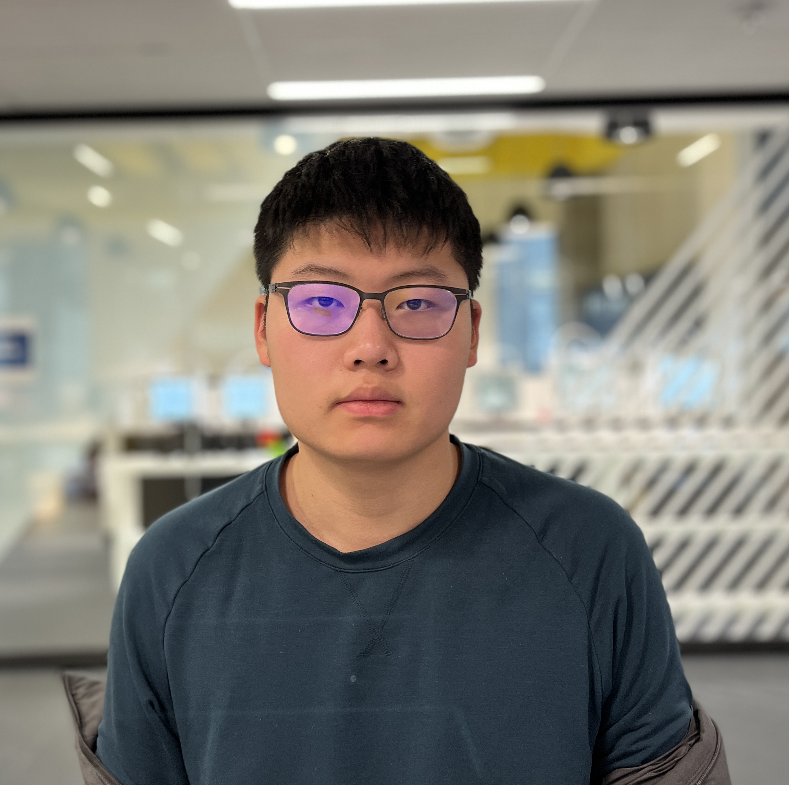

I'am a new student at BCIT campus and learning CIT as a fresh start on academic. I want to study harder and find out what I'am good at in academic, it will be difficult and tough for the long run, but I believe it will be worth the effort. I was born in China, and I love meeting new people and making new connection if possible. I live with my parents, and I don't have any siblings. I would love to own a puppy one day.
One of my favorite food is pizza, and I love playing video games when I was young. I wish myself a good luck starting a new beginning at BCIT, and I hope to do a good job before the semester ends.